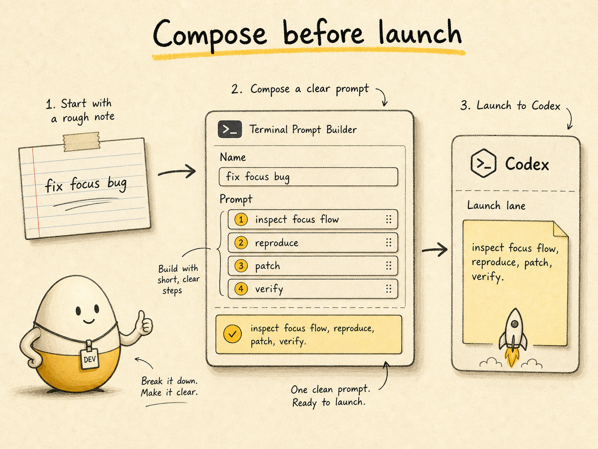
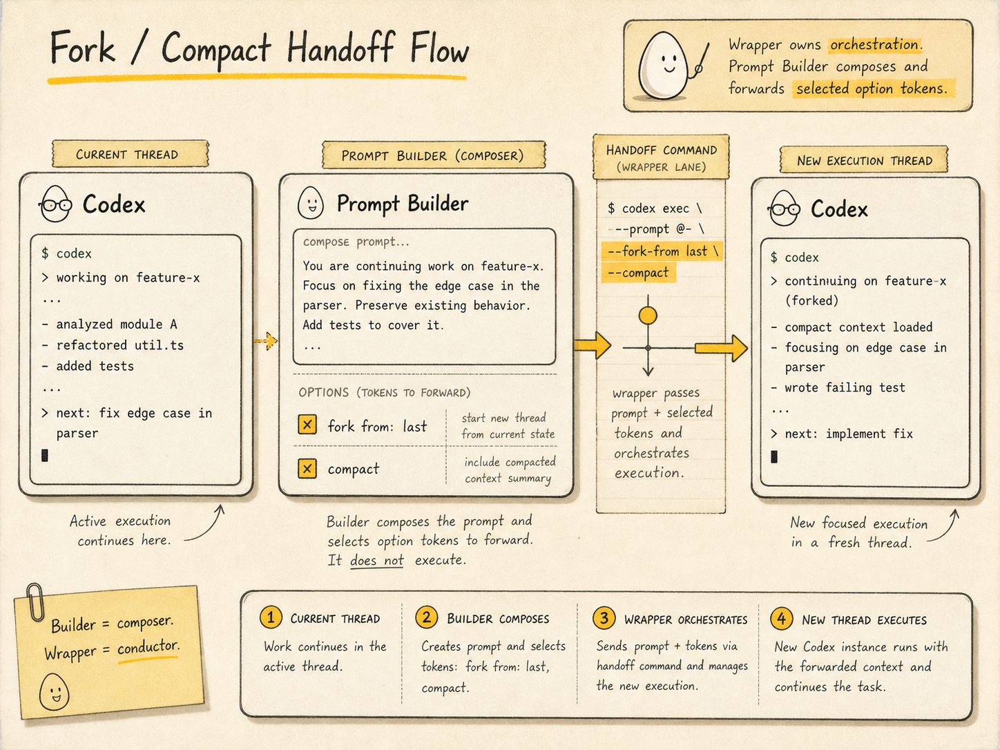
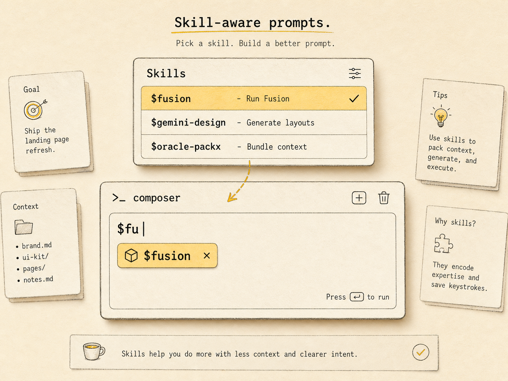
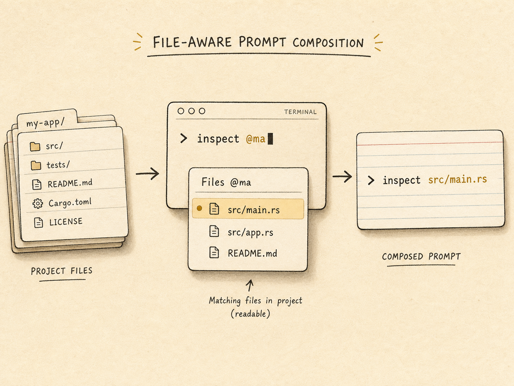
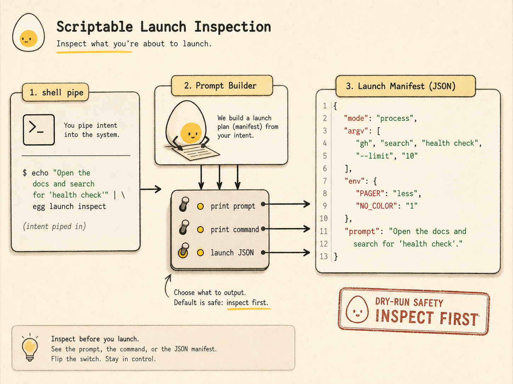

Before
A half-formed prompt goes straight into execution.
Prompt Builder is a small terminal composer for the moment before execution. Use it to name the work, shape the prompt, add skills, reference files, inspect the command, and hand off only when the task is ready.
It sits between your shell and Codex. It does not replace Codex. It makes the launch cleaner.
a quiet cockpit before execution
When the prompt is vague, the run starts vague. That means more correction, more context repair, and more time spent steering an agent that already left the runway.
A half-formed prompt goes straight into execution.
The agent starts making assumptions while the real task is still forming.
The developer spends the session cleaning up intent.
Compose, enrich, inspect, then launch.
It supports a prompt field, optional conversation name, skill lookup, file lookup, handoff options, Codex pass-through flags, dry-run output, and structured launch JSON.
Write the real task before a tool that can edit files receives it.
Add skill mentions and file references while the prompt is still forming.
Submit to Codex or pass the final prompt as an argv element to a wrapper.
Prompt Builder keeps the workflow boring in the best way: prepare the prompt before the command that can run tools receives it.
Start empty, prefill text, or pipe content from another command.
Give the work a short thread name when that helps the run stay legible.
Use Enter to submit and Shift+Enter for new lines.
Use $ for skills and @ for files.
For wrappers, toggle options like fork, compact, or custom args.
Print the prompt, command, launch JSON, dry-run, or submit.
Prompt Builder is for the moments where a little structure before execution prevents a messy session afterward.

A developer starts with a rough idea, but does not want Codex acting on it yet. Prompt Builder gives them a staging area to name the thread, write the real task, add verification instructions, and only then send it.
fix focus bugInspect the focus flow, reproduce, patch, and verify.
A user working from a focused Codex pane can compose the next prompt and hand it through a wrapper with fork and compact options visible. Prompt Builder does not own wrapper orchestration; it forwards selected option tokens and the final prompt.
continue from last, but compact firsthandoff args + enabled toggles + final prompt
Instead of remembering exact skill names or typing them cold,
the user opens skill lookup with $, filters the
list, and inserts the selected skill into the prompt.
use fusion somehowStart with $fusion, inspect the failing path, patch, then verify.
The user types an @ reference, searches the project
file list, accepts the right path, and submits a prompt that
names the files Codex should inspect first.
inspect @mainspect src/main.rs
For shell, cmux, or wrapper workflows, Prompt Builder can print the composed prompt, render the command, dry-run submission, or emit structured launch JSON so other tools do not parse shell-quoted text.
pipe text into a tool and hopeprint prompt / print command / launch JSON / dry-runThe tool stays small. Each feature belongs to the moment before the handoff.
$, and insert the selected mention.@, accept a match, and insert the path.Practical commands for the workflows this page describes.
prompt-builder
prompt-builder "fix the focus in the main window"printf 'fix the focus in the main window\n' | \
prompt-builder --submitprintf 'explain this\n' | \
prompt-builder --stdin --print-promptprompt-builder --dry-run --print-command "hello"
prompt-builder --print-launch-json "hello"prompt-builder --handoff-command xfc
prompt-builder --handoff-command x \
--handoff-arg fork \
--handoff-arg=--lastprompt-builder \
--handoff-command xfc \
--fork-from last \
--compactprompt-builder \
-C ~/dev/codex \
--profile fixit \
--model gpt-5.5 \
-c 'instructions="Be concise."'prompt-builder --instructions "Base instructions"
prompt-builder --developer-instructions \
"Inspect source first."Prompt Builder should be explained plainly. Its power comes from being small.
--dangerously-bypass-approvals-and-sandbox. Use trusted directories and inspect before running.The page is done when a viewer can explain where Prompt Builder fits without reading the repo.
index.html exists at the site root.